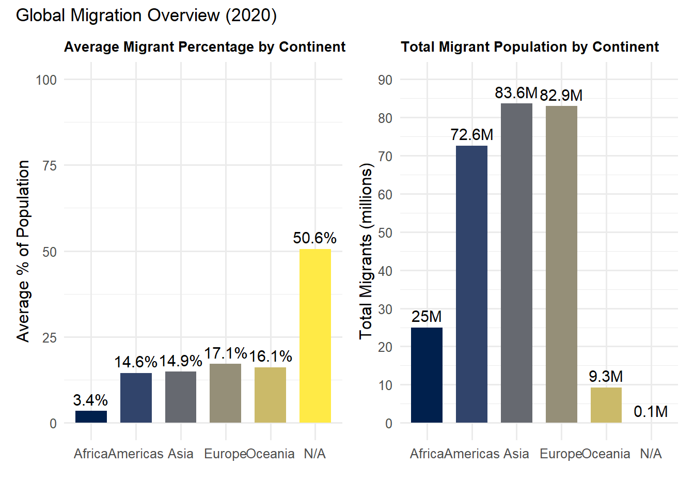

library(ggplot2)library(scales)library(dplyr)# Set up properties for the chartvw8 <- df |> dplyr::slice_max(order_by = migrants_total, n =8) |> dplyr::mutate(width_scaled = scales::rescale(sp_pop_totl, to =c(0.4, 1.0)) # keep small bars visible ) |> dplyr::arrange(dplyr::desc(migrants_pct)) |> dplyr::rename(`Abbr`= iso3c,`Total Migrants`= migrants_total,`% Migrants`= migrants_pct,`Total Population`= sp_pop_totl )vw8
Abbr country Total Migrants % Migrants Total Population
1 SAU Saudi Arabia 13071258 42.2 31552510
2 AUS Australia 7604850 29.5 25649248
3 CAN Canada 8332892 21.8 38028638
4 DEU Germany 15021300 18.0 83160871
5 GBR United Kingdom 10520870 15.6 66744000
6 USA United States 50471028 14.9 331577720
7 FRA France 8610719 13.1 67601110
8 RUS Russian Federation 7297611 5.0 145245148
width_scaled
1 0.4115777
2 0.4000000
3 0.4242790
4 0.5127943
5 0.4805968
6 1.0000000
7 0.4822778
8 0.6345566
# Create Variable Width Column Chartp_vw <-ggplot(vw8, aes(x =reorder(country, `% Migrants`),y =`% Migrants`)) +geom_col(aes(width = width_scaled), fill ="#54A24B") +# Create the chartscale_y_continuous(labels =label_number(accuracy =0.1)) +labs(title ="Migrant % vs. Total Population (2020)",subtitle ="Height = Migrant share of population (%); Width = Total population",x =NULL,y ="Migrant share of population (%)" ) +theme_minimal(base_family ="serif") +theme(plot.title.position ="plot",panel.grid.minor =element_blank(),axis.text.x =element_text(angle =45, hjust =1, size =8) )p_vw
Variable-Width Column Chart
Chart 2 - Table with Embedded Charts
Chart 3 - Bar Charts
# To create this chart I took inspiration from analyst ___. I used their use of viridis as basis for this code.# I took the basis, used patchwork to post both charts side by side & used ChatGPT & forum.posit.co for guidance# to solve specific syntax errors.library(WDI)library(tidyverse)library(viridis)library(janitor)library(countrycode)library(ggplot2)library(scales)library(patchwork)#DATA# 2020 snapshot: migrants (count + %s) for all countriesmigration_raw <-WDI(country ="all",indicator =c(migrants_total ="SM.POP.TOTL",migrants_pct ="SM.POP.TOTL.ZS" ),start =2020, end =2020, extra =TRUE)migration <- migration_raw %>%clean_names() %>%filter(region !="Aggregates") %>%# remove World/income groupsmutate(continent =countrycode(iso3c, "iso3c", "continent"))# Summarize by continent (2020) continent_summary <- migration %>%group_by(continent) %>%summarize(avg_migrant_pct =mean(migrants_pct, na.rm =TRUE),total_migrants =sum(migrants_total, na.rm =TRUE) ) %>%arrange(desc(total_migrants)) continent_summary
# A tibble: 6 × 3
continent avg_migrant_pct total_migrants
<chr> <dbl> <dbl>
1 Asia 14.9 83609413
2 Europe 17.1 82887317
3 Americas 14.6 72556607
4 Africa 3.45 24959596
5 Oceania 16.1 9253374
6 <NA> 50.6 84087
# Create dataset# Average migrant % per continent (2020)continent_summary_avg <- migration %>%group_by(continent) %>%summarize(avg_migrant_pct =mean(migrants_pct, na.rm =TRUE)) %>%arrange(desc(avg_migrant_pct))continent_summary_avg
# A tibble: 6 × 2
continent avg_migrant_pct
<chr> <dbl>
1 <NA> 50.6
2 Europe 17.1
3 Oceania 16.1
4 Asia 14.9
5 Americas 14.6
6 Africa 3.45
# Replace NA with "N/A"continent_summary$continent <-ifelse(is.na(continent_summary$continent),"N/A", continent_summary$continent)# Convert to factor with alphabetical levelscontinent_summary$continent <-factor( continent_summary$continent,levels =sort(unique(continent_summary$continent)))continent_levels <-c(setdiff(sort(unique(continent_summary$continent)), "N/A"), "N/A")continent_summary$continent <-factor(continent_summary$continent, levels = continent_levels)# Graph 1 Average Migrant %p1 <-ggplot(continent_summary, aes(x = continent, y = avg_migrant_pct, fill = continent)) +geom_col(width =0.7) +geom_text(aes(label =paste0(round(avg_migrant_pct, 1), "%")),vjust =-0.5, size =4) +scale_fill_viridis(discrete =TRUE, option ="E") +labs(title ="Average Migrant Percentage by Continent",x ="",y ="Average % of Population" ) +ylim(0, 100) +theme_minimal(base_size =12) +theme(legend.position ="none",plot.title =element_text(size =10, face ="bold") )#Graph 2 Total Migrantsp2 <-ggplot(continent_summary, aes(x = continent, y = total_migrants /1e6, fill = continent)) +geom_col(width =0.7) +geom_text(aes(label =paste0(round(total_migrants /1e6, 1), "M")),vjust =-0.5, size =4) +scale_fill_viridis(discrete =TRUE, option ="E") +scale_y_continuous(limits =c(0, 90), breaks =seq(0, 90, 10)) +labs(title ="Total Migrant Population by Continent",x ="",y ="Total Migrants (millions)" ) +theme_minimal(base_size =12) +theme(legend.position ="none")#Final Productprint((p1 + p2) +plot_annotation(title ="Global Migration Overview (2020)"))

Chart 4 - Column Chart
options(dplyr.summarise.inform =FALSE)suppressPackageStartupMessages({library(WDI)library(tidyverse, warn.conflicts =FALSE) # stops “masked from …” noteslibrary(janitor)library(countrycode)library(ggplot2)library(scales)})
migration_raw <-WDI(country ="all",indicator =c(migrants_total ="SM.POP.TOTL", # international migrants (count)migrants_pct ="SM.POP.TOTL.ZS"# migrants as % of population ),start =2020, end =2020, extra =TRUE)migration <- migration_raw |>clean_names() |>filter(region !="Aggregates") |>mutate(continent =countrycode(iso3c, "iso3c", "continent"))# Top 8 destinations by migrant COUNTtop8 <- migration |>filter(!is.na(migrants_total)) |>slice_max(order_by = migrants_total, n =8) |>arrange(migrants_total) |># smallest → largest so bars rise L→Rmutate(country =factor(country, levels = country))
light_green <-"#8BC34A"p_top8_v <-ggplot(top8, aes(x = country, y = migrants_total)) +geom_col(fill = light_green) +scale_y_continuous(labels =label_number(scale_cut =cut_short_scale()),expand =expansion(mult =c(0, 0.03)) ) +labs(title ="Top 8 Countries by International Migrant Stock (2020)",subtitle ="Source: World Bank WDI (SM.POP.TOTL)",x =NULL, y ="Migrant Stock (people)" ) +theme_minimal(base_family ="serif") +theme(plot.title.position ="plot",panel.grid.minor =element_blank(),axis.text.x =element_text(angle =45, hjust =1))p_top8_v